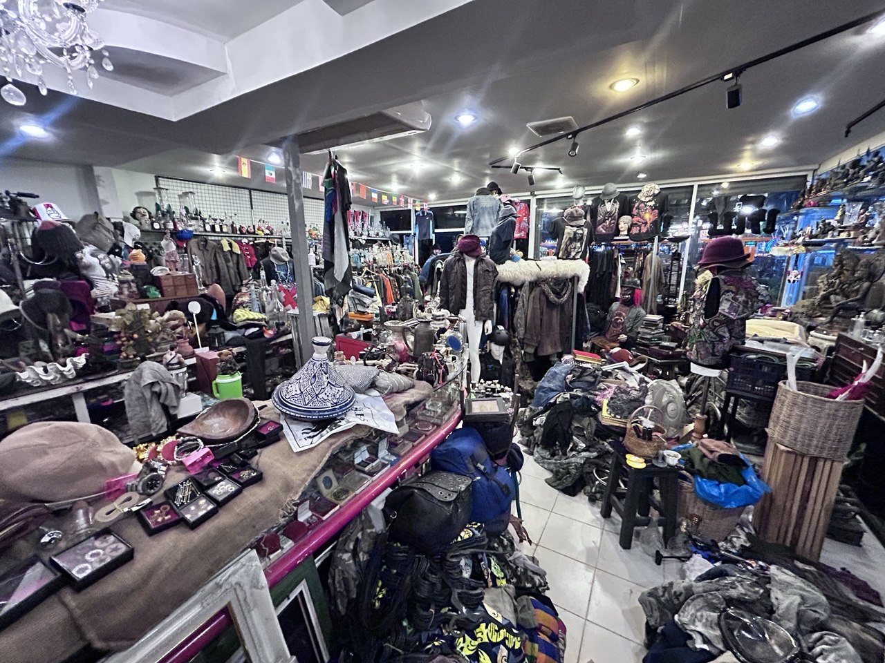

ไม่อยากจะเหมือนใคร ไม่อยากจะซ้ำใคร
Don't want to be like anyone. Don't want to repeat anyone.
Most shops tell you when they're open. Secret Thrift tells you what it isn't. That line above is the shop's own, and it fits.
It's a thrift and collectibles shop in Phuket that comes alive late at night, on the owner's own clock, and runs deep into the small hours. There's barely a trace of it online. We've been buying from it for a while, and we think it's one of the most rewarding digs on the island, if you go about it the right way.
The collector
The shop has been running for around five years, and it's run by one person: a collector first, a shopkeeper second. Most of the stock is sourced by the owner himself. He's friendly, with a fun personality.
The hours are his own: late, irregular, and not worth guessing. More on that below.
Inside
Fair warning: this is not a tidy shop, and that's the appeal. Shelves are full, piles are tall, and the paths between them are narrow. There's no catalogue and no obvious order. Think digging, not browsing. Slow down, look twice at every stack, and give yourself a couple of hours.

The glass wall
The first thing that hooks you is the glass: shelves and shelves of empty alcohol and perfume bottles. The range is wild. Some are everyday bottles you could grab at a 7-Eleven today. Others are around 30 years old, the kind we haven't seen anywhere else. Around them, decorations and souvenirs fill whatever gaps are left. Squeezing through the tight stacks is half the fun, so mind your elbows and your bag. Good for shelf display, DIY lamps and vases, and photo props.
Denim, jackets, helmets
Clothing, helmets and accessories are scattered through the shop instead of sorted into sections, so every pile deserves a second look. This is where patience pays off.
The metal tees
The owner keeps a stash of rare metal band shirts, with some of the most graphic and explicit artwork we've seen for sale in Phuket. Rarer pieces climb to around 2,000 baht. If you collect, this alone is worth the visit.
Phra Khrueang and monk icons
The other big draw is a large collection of Thai collectible monk coins and amulets (พระเครื่อง, phra khrueang), alongside monk statuettes, images and related icons. For many Thai people these are serious collectibles, and they're sacred objects, not décor. If you're new to them, ask before you pick anything up, and treat them as sacred, not as souvenirs.
Visiting from abroad? Exporting Buddha images can require a permit from Thailand's Fine Arts Department. Check the current rules before you fly.
Field notes
| Type | Thrift, vintage and collectibles |
|---|---|
| Where | Phuket |
| When | Late at night, on the owner's schedule |
| Running | Around five years |
| Look for | 30-year-old bottles, rare metal band tees, Thai amulets, denim, jackets, helmets |
| Price signal | Rare band tees up to about 2,000 baht. |
| Budget | A couple of hours |
| Visit | By DM only (see below) |
Want to go? Knock first.
This is a one-person shop on its own schedule, and the owner isn't chasing crowds. So there's no address and no opening hours in this post. It's not a locked door, it's a polite knock. DM us on Instagram, tell us roughly when you'd like to go and how many of you there are, and we'll check with the owner so he knows you're coming. Then we'll send you the details. Please don't turn up unannounced. It's late, it's irregular, and a closed door helps nobody.
DM us to ask about a visitWhen you're there
- Ask before filming or photographing.
- Mind the glass.
- Be patient. It's a dig.
- Everything here is part of someone's collection, so treat it that way.
อยากไปที่ร้าน? ทักมาหาเราก่อนนะ เจ้าของร้านเปิดไม่เป็นเวลา เราจะช่วยแจ้งเขาให้ก่อน แล้วค่อยส่งรายละเอียดให้ ขอความกรุณาอย่าแวะไปโดยไม่นัดล่วงหน้า
Verdict
Secret Thrift isn't polished and doesn't try to be. It's dense, odd, and full of things we haven't seen anywhere else. If you like digging, it's worth the polite knock.
We shop here regularly, and a friend of OA has known the owner for a while. No payment, no deal, no freebies. This is just our opinion.